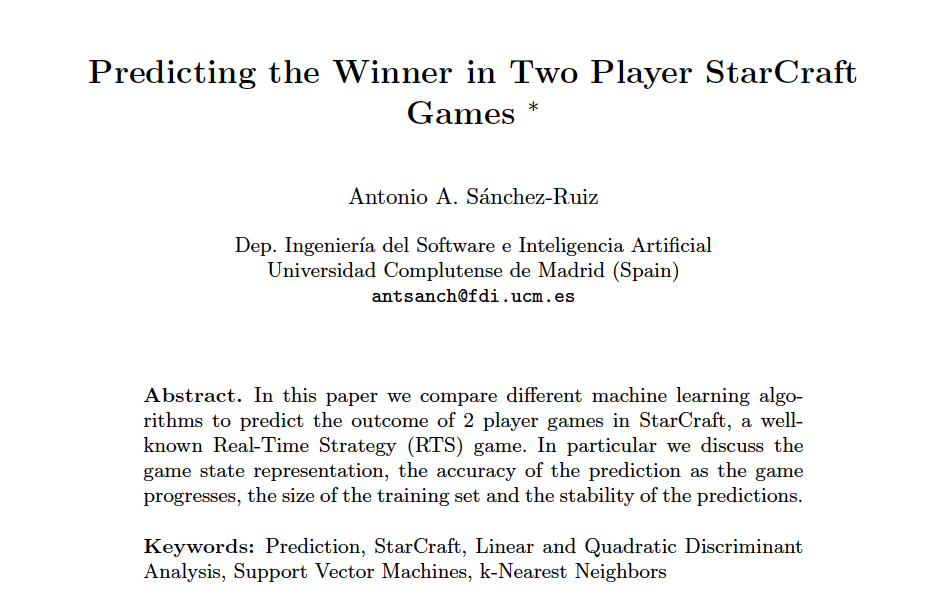
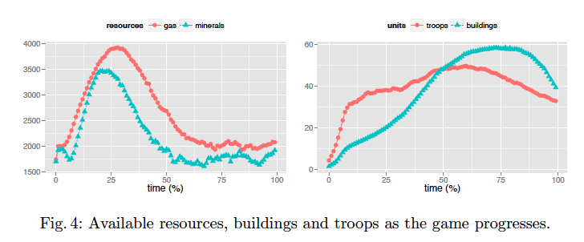
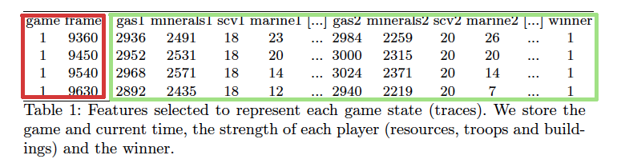
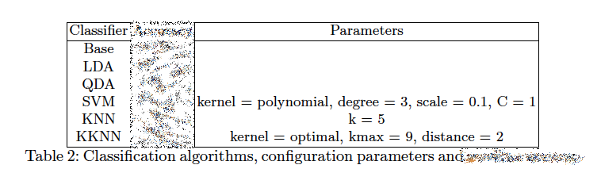
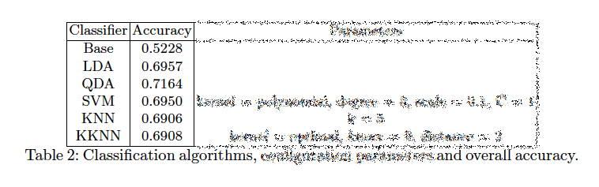
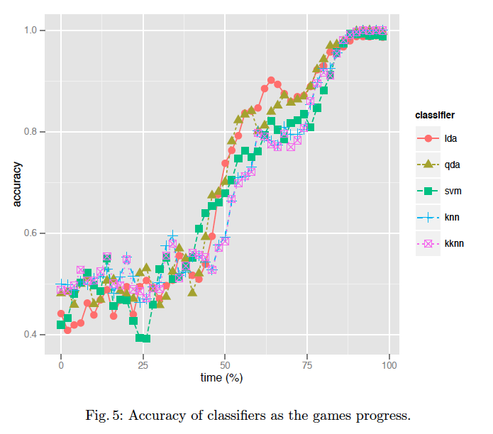
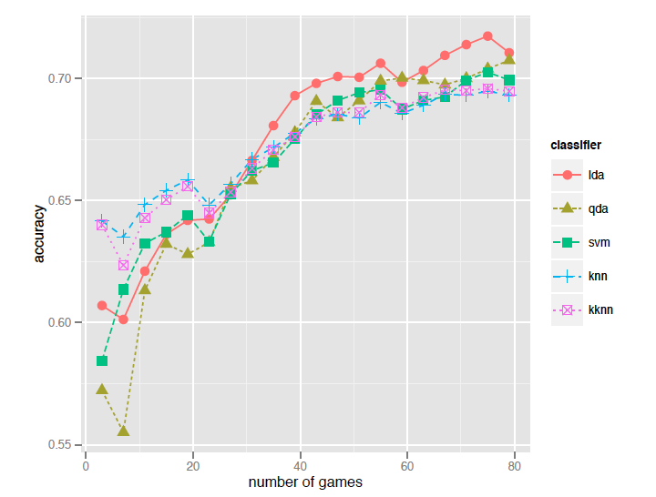
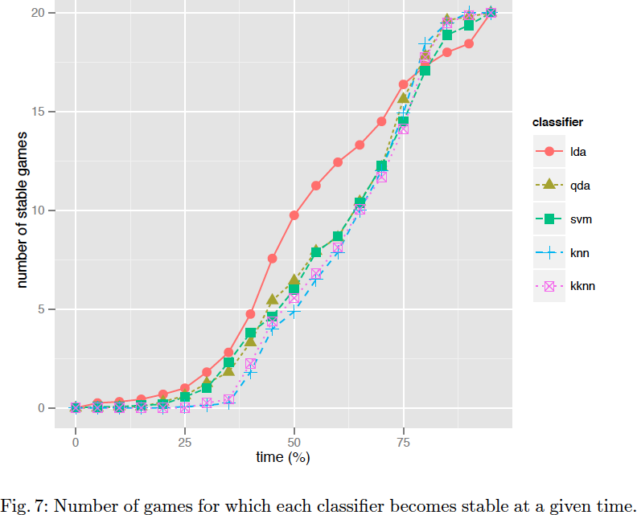

Explicando Predicting the Winner in Two Player StarCraft Games

Portada artículo original disponible en http://ceur-ws.org/Vol-1394/paper_3.pdf
¿De qué trata? (según el abstract)
- Comparar algoritmos machine learning para predecir el resultado de partidas en StarCraft
- Reflexionan sobre:
- la representación del estado del juego,
- la bondad de la predicción,
- el tamaño del conjunto de entrenamiento
- y la estabilidad de las predicciones.
¿Qué conclusiones destacan?
- Comportamiento muy similar, mejores resultados con Linear Discriminant Analysis.
¿Qué trabajos futuros creen interesantes?
- Mapas y bots distintos.
- Más de 2 jugadores.
- Más de 1 raza.
- Otros datos de entrada:
- Distribución de unidades y edificios en el mapa
- Evolución del juego, no solo el estado en determinados instantes.
"We think there is a lot of work to do selecting
features to train the classi�fiers."
¿Qué aportan con respecto a otros autores?
- No crean bots para ganar, sino bots observadores que intentan predecir cuál de los otros bots va a ganar.
¿Por qué StarCraft?
- Un RTS popular:
- Recolectar recursos
- Desarrollar tecnología
- Construir ejércitos:
- Elegir entre 3 tipos de razas
- Cada una con distintos tipos de unidades, puntos débiles y fuertes
- Derrotar al enemigo
- Exige readaptar estrategias dinámicamente
- Macro: en qué emplear los recursos y cómo usar sus unidades
- Micro: dividir tropas en comandos, posicionarlos, decidir qué habilidades usar de dichas tropas, cuándo hacerlo...
- Se pueden crear bots usando el framework BWAPI (...¡claro que sí!)
¿Qué restricciones se han impuesto?
Machine Learning (I): ¿cómo han recopilado los datos?
- Crean un bot (BWAPI) que:
- 0 unidades y ve todo el mapa
- No interfiere, solo recopila datos.
- Jugando partidas de 3 jugadores:
- El bot es el jugador humano obligatorio
- 2 jugadores manejados por la IA del propio juego: Expansion Terran Campaign Insane
- Modificando el mapa Baby Steps (solo para 2 jugadores)
- Deshabilitan los disparadores propios del juego, así:
- El bot reinicia el juego en cuanto uno de los 2 jugadores (NO el bot) pierde
- No tiene en cuenta, por tanto, que las unidades del bot son 0
Machine Learning (II): ¿cuántos datos han recopilado?
- 100 partidas: 50% ganadas por cada jugador
- Multitud de traces por partida:
- 1 trace cada 5 segundos
- Cada trace corresponde a un frame (1 seg = 18 frames)
- 730 de media por partida
- Pocas partidas rápidas. La mayoría entre 45 y 100 minutos. Media 60.83 minutos.
- Cada trace es representado por un vector de características etiquetado con el ganador de la partida
Machine Learning (III): ¿alguna primera medida sobre los datos?

Valores promediados de cada jugador para 100 partidas
Machine Learning (IV): ¿qué características han considerado importantes?

Estructura de los ficheros de entrenamiento y test
- Recursos disponibles
- Número de unidades de cada tipo disponibles
- No se usan ni número de partida ni número de frame.
- Total: 28 características (2 recursos, 15 tipos de tropas, 11 tipos de edificios para Terrans)
Machine Learning (V): ¿qué algoritmos han utilizado?
- Linear Discriminant Analysis (LDA): combinación lineal de características para separar clases; todas las clases con la misma matriz de covarianza.
- Quadratic Discriminant Analysis (QDA): más flexible pues no asume la igualdad de la matriz de covarianza.
- Support Vector Machines (SVM): prueban 3 kernels: polinómico (resulta ser el mejor), RBF y lineal.
- k-Nearest Neighbour (KNN)
- Weighted KNN (KKNN)
Machine Learning (VI): ¿cómo han implementado los algoritmos?
- R, con los algoritmos de los paquetes caret, MASS,
e1071, class and kknn.
Experimentación
- Parámetros de cada algoritmo (hallados usando 10-cvf sobre una amplia variedad de configuraciones):

Parámetros de ejecución de cada algoritmo
- Precisión de la clasificación (16 ejecuciones usando 80% para trn y 20% para tst).

Precisión en la clasificación de cada algoritmo
- Base consiste en asignar la clase usando simplemente el número de partidas ganadas por cada jugador (no tiene en cuenta el estado de cada trace).
- Pero... ¿Dónde está la desviación estándar?
Resultados: ¿qué algoritmo predice mejor?
- Mejor: QDA. 71%. OJO: mismo AI para ambos jugadores; mezcla de traces del minuto 1 con los del minuto 87... Muy equilibrado.
- ¿Qué ocurre si tenemos en cuenta cómo progresan las partidas?

Precisión de cada algoritmo conforme progresan las partidas
- Pero... ¿cómo hace la partición de datos? ¿cuáles usa? ¿cuáles no?
Resultados: ¿cuántas partidas realmente harán falta para entrenar cada algoritmo?

Precisión de cada algoritmo con respecto al número de partidas
- Pero... ¿cómo hace la partición de datos? ¿cuáles usa? ¿cuáles no?
Resultados: ¿cuán estable es cada algoritmo?

Número de partidas en un determinado momento para las que la predicción ya no cambia hasta el final de cada una de ellas
- 20 predicciones para cada partida a intervalos del 5%
- Por ejemplo, LDA no cambia de parecer a partir de la mitad de la partida.
Conclusión previa a las conclusiones
In conclusion, is this domain and using our game state representation,
LDA seems to be the best classifi�er. It obtains a level of accuracy
over 80% when only 55% the game has been played, it learns faster than
the other algorithms from 30 games in the training set, and it is the
most stable classi�er for most part of the game.
Recmendaciones de bibliografía
- Lara-Cabrera, R., Cotta, C., Leiva, A.J.F.: A review of computational intelligence in RTS games. In: IEEE Symposium on Foundations of Computational Intelligence,
FOCI 2013, Singapore, Singapore, April 16-19, 2013. pp. 114{121 (2013)
- Ontañon, S., Synnaeve, G., Uriarte, A., Richoux, F., Churchill, D., Preuss, M.: A Survey of Real-Time Strategy Game AI Research and Competition in StarCraft.
Víctor Manuel Rivas, para Geneura Team